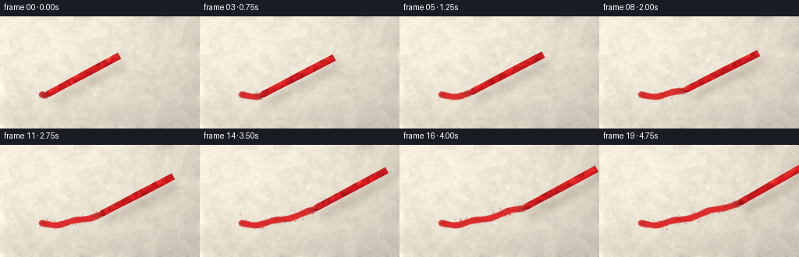
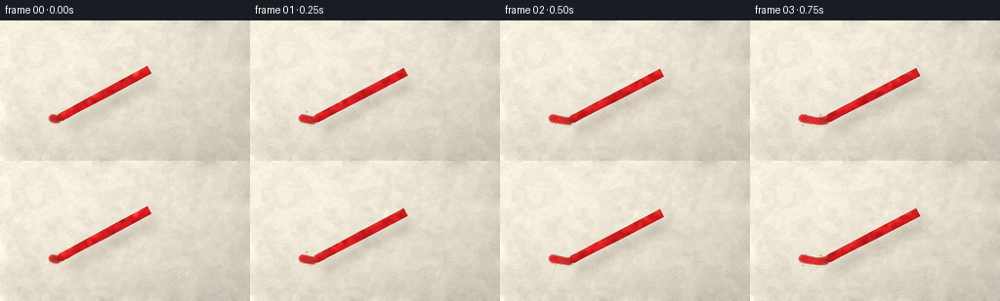
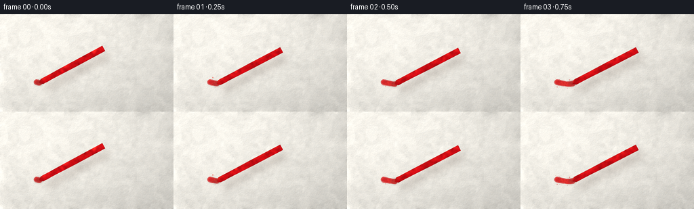
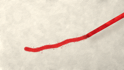
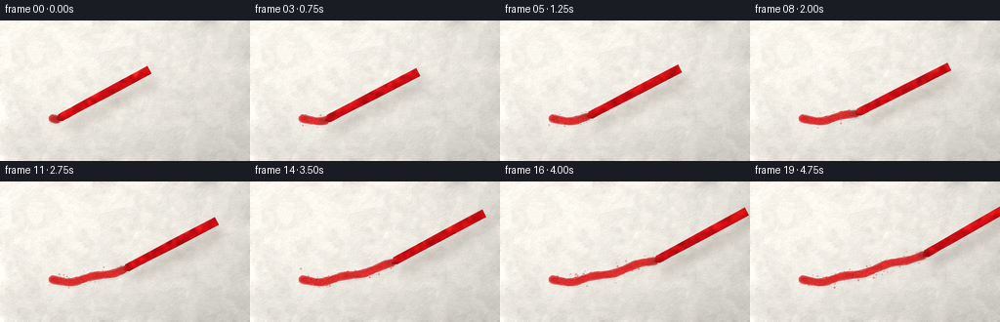

CODING AGENTS AS PIXEL WORLD MODELS
traex/DeepSeek-V4.1-Flash · phygen_033
点击播放 · 原生 RGB 像素
逐轮保存的候选
回放视频、检查图与代码变化。
每份候选均可单独播放。实际图片检查记录在下方工具轨迹中。
候选 01播放与检查图
点击播放 · 原生 RGB 像素


展开代码变化
--- 上一保存版本
+++ 本次保存版本
@@ -0,0 +1,331 @@
+from pathlib import Path
+
+import numpy as np
+from PIL import Image, ImageDraw, ImageFilter
+
+import artifact_io
+
+
+CASE_DIR = Path(__file__).resolve().parent
+WIDTH = 256
+HEIGHT = 144
+FRAMES = 20
+FPS = 4.0
+SS = 4
+W = WIDTH * SS
+H = HEIGHT * SS
+RNG = np.random.default_rng(34017)
+
+
+def smoothstep(x):
+ x = np.clip(x, 0.0, 1.0)
+ return x * x * (3.0 - 2.0 * x)
+
+
+def blurred_noise(shape, sigma, rng, contrast=1.0):
+ noise = rng.standard_normal(shape).astype(np.float32)
+ encoded = np.clip(noise * 36.0 + 128.0, 0.0, 255.0).astype(np.uint8)
+ blurred = Image.fromarray(encoded, "L").filter(ImageFilter.GaussianBlur(sigma))
+ values = np.asarray(blurred, dtype=np.float32) / 255.0
+ values -= values.mean()
+ values /= max(values.std(), 1e-6)
+ return values * contrast
+
+
+def shifted(array, dx, dy):
+ canvas = np.zeros_like(array)
+ x0 = max(0, dx)
+ x1 = min(array.shape[1], array.shape[1] + dx)
+ y0 = max(0, dy)
+ y1 = min(array.shape[0], array.shape[0] + dy)
+ sx0 = max(0, -dx)
+ sx1 = min(array.shape[1], array.shape[1] - dx)
+ sy0 = max(0, -dy)
+ sy1 = min(array.shape[0], array.shape[0] - dy)
+ canvas[y0:y1, x0:x1] = array[sy0:sy1, sx0:sx1]
+ return canvas
+
+
+def catmull_rom(points, samples_per_segment=100):
+ points = np.asarray(points, dtype=np.float32)
+ padded = np.vstack([points[0], points, points[-1]])
+ pieces = []
+ for index in range(1, len(padded) - 2):
+ p0, p1, p2, p3 = padded[index - 1:index + 3]
+ t = np.linspace(0.0, 1.0, samples_per_segment, endpoint=False, dtype=np.float32)
+ t2 = t * t
+ t3 = t2 * t
+ curve = 0.5 * (
+ (2.0 * p1)
+ + (-p0 + p2) * t[:, None]
+ + (2.0 * p0 - 5.0 * p1 + 4.0 * p2 - p3) * t2[:, None]
+ + (-p0 + 3.0 * p1 - 3.0 * p2 + p3) * t3[:, None]
+ )
+ pieces.append(curve)
+ pieces.append(points[-1][None])
+ path = np.vstack(pieces)
+ lengths = np.r_[0.0, np.cumsum(np.linalg.norm(np.diff(path, axis=0), axis=1))]
+ return path, lengths / lengths[-1]
+
+
+def sample_path(path, fractions, cumulative):
+ fractions = np.clip(np.asarray(fractions), 0.0, 1.0)
+ x = np.interp(fractions, cumulative, path[:, 0])
+ y = np.interp(fractions, cumulative, path[:, 1])
+ return np.stack([x, y], axis=-1)
+
+
+def make_paper():
+ yy, xx = np.mgrid[0:H, 0:W].astype(np.float32)
+ nx = xx / max(W - 1, 1)
+ ny = yy / max(H - 1, 1)
+
+ broad = blurred_noise((H, W), 22.0, RNG, 1.0)
+ medium = blurred_noise((H, W), 7.0, RNG, 1.0)
+ tooth = blurred_noise((H, W), 2.1, RNG, 1.0)
+ fine = blurred_noise((H, W), 0.75, RNG, 1.0)
+
+ base = np.empty((H, W, 3), dtype=np.float32)
+ base[..., 0] = 238.0
+ base[..., 1] = 234.0
+ base[..., 2] = 221.0
+
+ tint = (
+ 1.0
+ + 0.015 * broad
+ + 0.010 * medium
+ + 0.007 * fine
+ )
+ lighting = 1.055 - 0.105 * nx - 0.050 * ny
+ lighting *= 0.975 + 0.045 * (1.0 - ny)
+ vignette = 1.0 - 0.075 * (((nx - 0.46) / 0.72) ** 2 + ((ny - 0.48) / 0.78) ** 2)
+ base *= (tint * lighting * vignette)[..., None]
+
+ # Raking light makes the paper tooth read as a rough physical surface.
+ emboss_x = np.gradient(tooth, axis=1)
+ emboss_y = np.gradient(tooth, axis=0)
+ emboss = (emboss_x * -0.55 + emboss_y * -0.83) * 7.0
+ base += emboss[..., None]
+
+ fiber_layer = Image.new("L", (W, H), 0)
+ fiber_draw = ImageDraw.Draw(fiber_layer)
+ for _ in range(1150):
+ x = RNG.uniform(0, W)
+ y = RNG.uniform(0, H)
+ angle = RNG.normal(-0.12, 0.38)
+ length = RNG.uniform(2.0, 17.0) * SS * 0.55
+ dx = np.cos(angle) * length
+ dy = np.sin(angle) * length
+ value = int(RNG.uniform(16, 42))
+ fiber_draw.line((x, y, x + dx, y + dy), fill=value, width=max(1, int(RNG.uniform(1, 2.1))))
+ fibers = np.asarray(fiber_layer.filter(ImageFilter.GaussianBlur(0.55)), dtype=np.float32) / 255.0
+ base -= fibers[..., None] * np.array([17.0, 16.0, 13.0], dtype=np.float32)
+
+ # A few faint warm fibers keep the surface from looking like digital noise.
+ warm_fibers = blurred_noise((H, W), 1.4, RNG, 1.0)
+ base += (warm_fibers * 1.5)[..., None] * np.array([1.0, 0.65, 0.30], dtype=np.float32)
+ return np.clip(base, 0.0, 255.0), tooth, medium
+
+
+def crayon_outline(tip, angle_degrees):
+ angle = np.deg2rad(angle_degrees)
+ axis = np.array([np.cos(angle), np.sin(angle)], dtype=np.float32)
+ cross = np.array([-axis[1], axis[0]], dtype=np.float32)
+ stations = np.array([0.0, 1.0, 2.5, 5.0, 8.0, 11.0, 14.0, 17.0, 21.0, 28.0, 42.0, 70.0, 125.0, 230.0, 430.0], dtype=np.float32)
+ taper = np.clip(stations / 17.0, 0.0, 1.0) ** 0.72
+ half_width = 0.85 + 15.4 * taper + 1.5 * smoothstep((stations - 45.0) / 250.0)
+ ripple = 1.0 + 0.010 * np.sin(stations * 0.23 + 0.7) + 0.006 * np.sin(stations * 0.061)
+ half_width *= ripple
+
+ left = tip + stations[:, None] * axis + (-half_width)[:, None] * cross
+ right = tip + stations[:, None] * axis + half_width[:, None] * cross
+ polygon = np.vstack([left, right[::-1]])
+ return polygon, axis, cross, stations, half_width
+
+
+def draw_crayon_shading(tip, angle_degrees, tooth, medium):
+ polygon, axis, cross, stations, half_width = crayon_outline(tip * SS, angle_degrees)
+ mask_img = Image.new("L", (W, H), 0)
+ ImageDraw.Draw(mask_img).polygon([tuple(point) for point in polygon], fill=255)
+ mask = np.asarray(mask_img, dtype=np.float32) / 255.0
+
+ yy, xx = np.mgrid[0:H, 0:W].astype(np.float32)
+ rel_x = (xx - tip[0] * SS) / SS
+ rel_y = (yy - tip[1] * SS) / SS
+ s = rel_x * axis[0] + rel_y * axis[1]
+ v = rel_x * cross[0] + rel_y * cross[1]
+ hw = np.interp(np.clip(s, stations[0], stations[-1]), stations, half_width)
+ q = np.clip(v / np.maximum(hw, 0.8), -1.0, 1.0)
+
+ curved = np.sqrt(np.maximum(0.0, 1.0 - q * q))
+ diffuse = np.clip(0.58 + 0.41 * (-0.84 * q + 0.54 * curved), 0.0, 1.18)
+ diffuse *= 0.97 + 0.035 * medium
+
+ shadow = np.array([92.0, 7.0, 17.0], dtype=np.float32)
+ base = np.array([214.0, 27.0, 34.0], dtype=np.float32)
+ bright = np.array([255.0, 86.0, 66.0], dtype=np.float32)
+ mix_hi = smoothstep((diffuse - 0.72) / 0.42)[..., None]
+ color = shadow + (base - shadow) * np.clip(diffuse / 0.72, 0.0, 1.0)[..., None]
+ color = color * (1.0 - mix_hi) + bright * mix_hi
+
+ specular = np.exp(-((q + 0.49) / 0.16) ** 2) * np.clip((s - 10.0) / 55.0, 0.0, 1.0)
+ specular *= 0.42 + 0.12 * medium
+ color += specular[..., None] * np.array([105.0, 54.0, 32.0], dtype=np.float32)
+
+ wax = 0.94 + 0.055 * medium + 0.018 * tooth
+ color *= wax[..., None]
+ color *= (0.90 + 0.10 * np.clip(s / 10.0, 0.0, 1.0))[..., None]
+
+ grad_y, grad_x = np.gradient(mask)
+ edge = np.clip(np.sqrt(grad_x * grad_x + grad_y * grad_y) * 2.3, 0.0, 1.0)
+ color *= (1.0 - 0.18 * edge)[..., None]
+
+ return np.clip(color, 0.0, 255.0), mask
+
+
+def draw_stroke(path, cumulative, progress, tooth, medium):
+ last = int(np.searchsorted(cumulative, progress, side="right"))
+ last = max(1, min(last, len(path) - 1))
+ visible = path[:last + 1]
+ current = sample_path(path, [progress], cumulative)[0]
+ if np.linalg.norm(visible[-1] - current) > 0.2:
+ visible = np.vstack([visible, current])
+
+ outer_img = Image.new("L", (W, H), 0)
+ core_img = Image.new("L", (W, H), 0)
+ outer_draw = ImageDraw.Draw(outer_img)
+ core_draw = ImageDraw.Draw(core_img)
+ visible_distance = progress * np.sum(np.linalg.norm(np.diff(path, axis=0), axis=1))
+ running = 0.0
+ for index, point in enumerate(visible):
+ if index:
+ running += float(np.linalg.norm(visible[index] - visible[index - 1]))
+ phase = running / 9.0
+ wobble = 0.22 * np.sin(phase * 2.7 + 0.8) + 0.11 * np.sin(phase * 7.3)
+ outer_radius = (3.85 + wobble) * SS
+ core_radius = (2.62 + 0.24 * np.sin(phase * 4.1)) * SS
+ x, y = point * SS
+ outer_draw.ellipse((x - outer_radius, y - outer_radius, x + outer_radius, y + outer_radius), fill=255)
+ core_draw.ellipse((x - core_radius, y - core_radius, x + core_radius, y + core_radius), fill=255)
+
+ outer = np.asarray(outer_img, dtype=np.float32) / 255.0
+ core = np.asarray(core_img, dtype=np.float32) / 255.0
+ texture = 0.50 + 0.50 * np.clip(0.50 + 0.30 * tooth + 0.20 * medium, 0.0, 1.0)
+ coverage = outer * (0.43 + 0.48 * texture) + core * (0.20 + 0.22 * texture)
+ coverage = np.clip(coverage, 0.0, 0.97)
+
+ deep = np.array([177.0, 20.0, 31.0], dtype=np.float32)
+ wax = np.array([226.0, 45.0, 43.0], dtype=np.float32)
+ color = deep + (wax - deep) * (0.22 + 0.68 * texture[..., None])
+ color += (0.35 * core * (texture - 0.5))[..., None] * np.array([38.0, 14.0, 2.0], dtype=np.float32)
+
+ # A faint cast shadow gives the wax line a small amount of relief.
+ stroke_shadow = np.asarray(
+ Image.fromarray((outer * 255).astype(np.uint8), "L").filter(ImageFilter.GaussianBlur(1.4 * SS)),
+ dtype=np.float32,
+ ) / 255.0
+ stroke_shadow = shifted(stroke_shadow, int(0.7 * SS), int(1.0 * SS))
+ return color, coverage, stroke_shadow, outer, progress
+
+
+def make_flecks(path, cumulative, progress):
+ fleck_img = Image.new("RGBA", (W, H), (0, 0, 0, 0))
+ draw = ImageDraw.Draw(fleck_img)
+ for _ in range(95):
+ u = RNG.uniform(0.0, 1.0)
+ if u > progress:
+ continue
+ point = sample_path(path, [u], cumulative)[0]
+ if u < 0.995:
+ tangent = sample_path(path, [min(1.0, u + 0.008)], cumulative)[0] - sample_path(
+ path, [max(0.0, u - 0.008)], cumulative
+ )[0]
+ tangent /= max(np.linalg.norm(tangent), 1e-5)
+ normal = np.array([-tangent[1], tangent[0]])
+ else:
+ normal = np.array([0.0, 1.0])
+ offset = normal * RNG.normal(0.0, 3.6) + tangent * RNG.normal(0.0, 2.0)
+ x, y = (point + offset) * SS
+ radius = RNG.uniform(0.22, 1.05) * SS
+ alpha = int(RNG.uniform(34, 130))
+ color = (
+ int(RNG.uniform(165, 229)),
+ int(RNG.uniform(16, 58)),
+ int(RNG.uniform(24, 58)),
+ alpha,
+ )
+ draw.ellipse((x - radius, y - radius, x + radius, y + radius), fill=color)
+ return np.asarray(fleck_img, dtype=np.float32) / 255.0
+
+
+def render_frame(frame_index, paper, tooth, medium, path, cumulative):
+ output = paper.copy()
+ progress = 0.035 + 0.965 * (frame_index / (FRAMES - 1)) ** 1.02
+ tip = sample_path(path, [progress], cumulative)[0]
+ tip += np.array([0.0, 0.22 * np.sin(frame_index * 1.7)], dtype=np.float32)
+ angle = -28.5 + 1.4 * np.sin(progress * np.pi * 1.25) + 0.35 * np.sin(frame_index * 0.9)
+
+ stroke_color, coverage, stroke_shadow, _, _ = draw_stroke(path, cumulative, progress, tooth, medium)
+ shadow_alpha = stroke_shadow * 0.105
+ output = output * (1.0 - shadow_alpha[..., None]) + np.array([114.0, 91.0, 74.0]) * shadow_alpha[..., None]
+ output = output * (1.0 - coverage[..., None]) + stroke_color * coverage[..., None]
+
+ flecks = make_flecks(path, cumulative, progress)
+ fleck_alpha = flecks[..., 3:4]
+ output = output * (1.0 - fleck_alpha) + flecks[..., :3] * 255.0 * fleck_alpha
+
+ crayon_color, crayon_mask = draw_crayon_shading(tip, angle, tooth, medium)
+ soft_shadow = shifted(crayon_mask, int(7.5 * SS), int(10.0 * SS))
+ soft_shadow = np.asarray(
+ Image.fromarray((soft_shadow * 255).astype(np.uint8), "L").filter(ImageFilter.GaussianBlur(5.2 * SS)),
+ dtype=np.float32,
+ ) / 255.0
+
+ contact = Image.new("L", (W, H), 0)
+ cx, cy = tip * SS
+ rx, ry = 6.2 * SS, 3.0 * SS
+ ImageDraw.Draw(contact).ellipse((cx - rx, cy - ry, cx + rx, cy + ry), fill=190)
+ contact = np.asarray(contact.filter(ImageFilter.GaussianBlur(2.0 * SS)), dtype=np.float32) / 255.0
+
+ combined_shadow = np.maximum(soft_shadow * 0.25, contact * 0.42)
+ shadow_color = np.array([77.0, 58.0, 48.0], dtype=np.float32)
+ output = output * (1.0 - combined_shadow[..., None]) + shadow_color * combined_shadow[..., None]
+ output = output * (1.0 - crayon_mask[..., None]) + crayon_color * crayon_mask[..., None]
+
+ # Gentle color shaping and a restrained final grain prevent flat gradients.
+ output[..., 0] *= 1.015
+ output[..., 1] *= 1.002
+ output[..., 2] *= 0.988
+ output = 255.0 * (output / 255.0) ** 1.012
+ final_noise = RNG.normal(0.0, 0.62, (H, W, 1)).astype(np.float32)
+ output += final_noise
+
+ small = Image.fromarray(np.clip(output, 0.0, 255.0).astype(np.uint8), "RGB").resize(
+ (WIDTH, HEIGHT), Image.Resampling.LANCZOS
+ )
+ return np.asarray(small, dtype=np.uint8)
+
+
+def main():
+ paper, tooth, medium = make_paper()
+ control_points = np.array(
+ [
+ [54.0, 100.5],
+ [73.0, 103.2],
+ [95.0, 97.1],
+ [117.0, 94.0],
+ [141.0, 84.5],
+ [161.0, 81.0],
+ [177.0, 75.8],
+ ],
+ dtype=np.float32,
+ )
+ path, cumulative = catmull_rom(control_points, samples_per_segment=110)
+ frames = [render_frame(index, paper, tooth, medium, path, cumulative) for index in range(FRAMES)]
+ frames = np.stack(frames, axis=0)
+ artifact_io.save(frames, CASE_DIR)
+ print(f"saved {frames.shape} RGB frames to {CASE_DIR}")
+
+
+if __name__ == "__main__":
+ main()
候选 02播放与检查图
点击播放 · 原生 RGB 像素


展开代码变化
--- 上一保存版本
+++ 本次保存版本
@@ -86,9 +86,9 @@
fine = blurred_noise((H, W), 0.75, RNG, 1.0)
base = np.empty((H, W, 3), dtype=np.float32)
- base[..., 0] = 238.0
- base[..., 1] = 234.0
- base[..., 2] = 221.0
+ base[..., 0] = 242.0
+ base[..., 1] = 242.0
+ base[..., 2] = 237.0
tint = (
1.0
@@ -161,16 +161,16 @@
diffuse = np.clip(0.58 + 0.41 * (-0.84 * q + 0.54 * curved), 0.0, 1.18)
diffuse *= 0.97 + 0.035 * medium
- shadow = np.array([92.0, 7.0, 17.0], dtype=np.float32)
- base = np.array([214.0, 27.0, 34.0], dtype=np.float32)
- bright = np.array([255.0, 86.0, 66.0], dtype=np.float32)
+ shadow = np.array([75.0, 3.0, 11.0], dtype=np.float32)
+ base = np.array([211.0, 12.0, 21.0], dtype=np.float32)
+ bright = np.array([248.0, 51.0, 40.0], dtype=np.float32)
mix_hi = smoothstep((diffuse - 0.72) / 0.42)[..., None]
color = shadow + (base - shadow) * np.clip(diffuse / 0.72, 0.0, 1.0)[..., None]
color = color * (1.0 - mix_hi) + bright * mix_hi
specular = np.exp(-((q + 0.49) / 0.16) ** 2) * np.clip((s - 10.0) / 55.0, 0.0, 1.0)
specular *= 0.42 + 0.12 * medium
- color += specular[..., None] * np.array([105.0, 54.0, 32.0], dtype=np.float32)
+ color += specular[..., None] * np.array([94.0, 38.0, 22.0], dtype=np.float32)
wax = 0.94 + 0.055 * medium + 0.018 * tooth
color *= wax[..., None]
可观测工具轨迹
实际执行的命令与返回图片。
命令 1exit 0
/bin/bash -c "sed -n '1,240p' prompt.txt"
命令 2exit 0
/bin/bash -c "sed -n '1,260p' GENERATION_RULES.md"
命令 3exit 0
/bin/bash -c 'cat task_spec.json'
命令 4exit 0
/bin/bash -c "find . -maxdepth 2 -type f -printf '%p\\n' | sort | sed -n '1,240p'"
命令 5exit 0
/bin/bash -c "sed -n '1,260p' artifact_io.py"
命令 6exit 0
/bin/bash -c "sed -n '1,300p' player_template.html"
命令 7exit 0
/bin/bash -c "python3 - <<'PY'
import numpy, PIL
print('numpy', numpy.__version__)
print('PIL', PIL.__version__)
PY"命令 8exit 0
/bin/bash -c 'python3 generate.py'
命令 9exit 0
/bin/bash -c "python3 - <<'PY'
from PIL import Image
import numpy as np
for i in (0,9,19):
a=np.asarray(Image.open(f'frames/{i:02d}.png')).astype(float)
bg=a[:45,:200]
print(i, 'bg mean', bg.mean((0,1)).round(1), 'p95', np.percentile(bg,95,axis=(0,1)).round(1))
PY"命令 10exit 0
/bin/bash -c "python3 - <<'PY'
from PIL import Image
import numpy as np
for i in (0,9,19):
a=np.asarray(Image.open(f'frames/{i:02d}.png')).astype(float)
red=(a[...,0]>a[...,1]*1.7)&(a[...,0]>a[...,2]*1.5)&(a[...,0]>90)
if red.any(): print(i, red.sum(), a[red].mean(0).round(1))
PY"命令 11exit 0
/bin/bash -c 'python3 generate.py'
命令 12exit 0
/bin/bash -c "python3 - <<'PY'
from pathlib import Path
from PIL import Image
import numpy as np, json
p=Path('.')
files=['generate.py','pixels.npz','index.html','inspection.png','transition_check.png']
for f in files: print(f, 'OK' if (p/f).exists() else 'MISSING', (p/f).stat().st_size if (p/f).exists() else '')
with np.load('pixels.npz') as z:
a=z['pixels']
print('pixels.npz', a.shape, a.dtype, 'range', int(a.min()), int(a.max()))
imgs=[np.asarray(Image.open(f'frames/{i:02d}.png')) for i in range(20)]
print('frames', len(imgs), imgs[0].shape, imgs[0].dtype)
print('changed pixels between consecutive frames', [int(np.any(imgs[i]"'!=imgs[i-1],axis=2).sum()) for i in range(1,20)])
print('"'nonblank std final', np.asarray(imgs[-1]).std(axis=(0,1)).round(2))
html=(p/'index.html').read_text()
print('player ready marker', 'window.__pixelReady=true' in html, 'caption', 'red crayon' in html)
PY"命令 13exit 0
/bin/bash -c 'git status --short'
视觉工具实际返回图片 1

视觉工具实际返回图片 2

视觉工具实际返回图片 3

视觉工具实际返回图片 4

保存候选 2 份；完成命令 13 次；可验证图片返回 4 张。原始 API 响应与完整日志保留在本地。